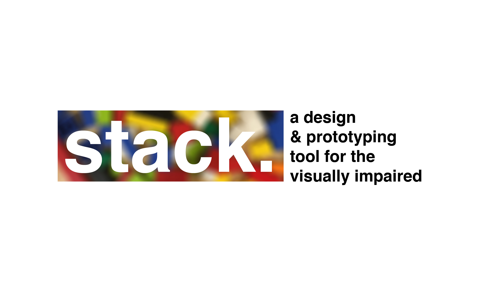
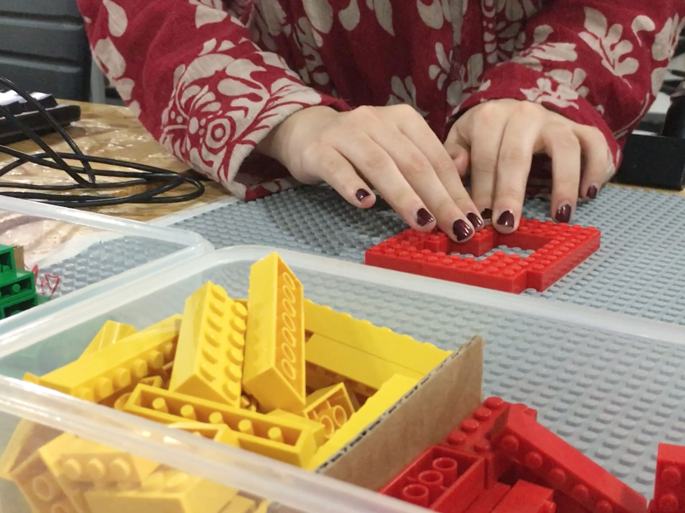

stack.
Won in the accessibility track at HackNYU. This is a piece of tech that allows people with a visual disability to design and create simple 3D models with their sense of touch! My laptop is using Processing's OpenCV library and a webcam to detect where Legos are being placed on a board. Processing's osc library then sends some data over to Unity where blocks are placed down on a virtual field.
The Ingredients!
- Processing 3.0
- osc library (for communication)
- OpenCV library (for vision)
- Unity3D
- Legos
- Webcam
Photos and details!
So this tool is something that evolved from a final I had to do for a class called interaction lab. Early versions of it stemmed from exploring Arduino to Unity interaction, but then I decided to scrap the Arduino aspect and play around with how computer vision could be integrated with Unity. I was inspired by TRANSFORM: Nature and Machine, a project from the Tangible Media group at the MIT Media Lab. I thought that going from the virtual to the physical was amazing, but then I thought reversing the process, physical to virtual, would be a fun exercise in interactivity.
Like with a lot of work, new ideas tend to appear post-creation, and it wasn't until HackNYU that me and my team thought of a new way to implement this piece of tech. Reimplementing and modifying the code, we managed to muster up a way for it to be used for people with visual impairments!
